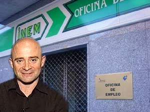

Telecinco
 De: La Frikipedia, la enciclopedia extremadamente seria.
De: La Frikipedia, la enciclopedia extremadamente seria.
Gran cadena de televisión en el pasado, actualmente en decadencia.
También llamada Telecirco, Timocinco, Telahinco, Telameto, o simplemente telemierda. Casa Vasile por Ángel Martín que cuenta en sus filas a profesionales de la talla de Belén Esteban, Maria Eugénia Yagüe, Paqui Peña...
Glorias del Pasado: únicos programas decentes (los decentes los cancelan pero a la Esteban nos la tenemos que tragar)
Programación Actual
La programación de Telecinco se compone básicamente de corazón (de cerdo) y programas de reportajes alarmistas para aumentar ingresos ¡¡cultura e información contrastada es el lema de la cadena!! O telediarios que nos dan la deformación actual (se inventan notcias para dar espectáculo).
Es el canal líder en programación basura de alto nivel cultural y científico, como La Noria, Sálvame, Sálvame Deluxe, Sálvame Deluxe 3D y una infinidad de programas de mierda muy ilustrativos.
"Programas del corazón", La insignia de la cadena
Programas cuyos contenidos son remanidos temas sin importancia. Hace tiempo se encontraban en la guerra de polígrafos. La cantidad de este tipo de programas, la retroalimentación que se producen entre ellos, la lucha de 2 cadenas, lo barato de los colaboradores y el dominio de las marujas sobre el mando de la tele han hecho posible la existencia de este tipo de contenido, el cual parece no estar siendo fácil de erradicar.
Ejemplos de estos programas son:
- El Tomate (oficialmente referidos en las querellas como Aquí hay tomate).Programa dedicado a atacar y cazar a los famosos. Para mantener a las marujas enganchadas al programa se ofrecen "cebos" alarmistas en el cual dan a entender que a algun famosete le ha pasado algo grave pero luego resulta que le dolia la uña del dedo gordo del pie izquierdo. El programa acabó hace tiempo debido al escaso indice de audiencia debido a programas como "Fama, a follar" o "Sé lo que hicisteis" y Carmen Alcayde y Jorge Javier Vázquez están desaparecidos.
- Hormigas Blancas. Un Aquí hay tomate, de noche, que van echando poco a poco pero íntegramente en Aquí hay tomate. También quitado por la desaparición de Jorge Javier Vázquez.
- El Programa de BE.
- A Tu Lado, programa en el cual el gran Felixuco estuvo retenido gracias una mezcla de drogas, control mental y brujería. RIP. También a terminado por la muerte de Enma García, de la que han hecho un clon que presenta dos programas de telecinco.
- Sábado Dolce Vita, descrito por Salsa Rosa con un trozo de madera que sube y baja".Tambien ha terminado(causas desconocidas.
- El Juego De Tu Vida, programa de noche en el cual Emma García intenta joder la vida de familias enteras ( incluido el perro ) haciendole preguntas indiscretas y que no nos interesan a nadie( hablando de personas normales eh ) sobre su vida sexual, si quiere a su suegra,si se ha tirado a caballo de la granja que tiene su sobrina,si su padre se bebe su semen o le pone cachon la abuela de su pareja(vamos provocando mas conflictos que Hitler ya que de las peleas y de la violencia es de lo que vive esta cadena)
- Mujeres y hombres y viceversa (y lo que que quieras poner de más que no hay límite), es un programa de la sobremesa en el que un chulo de playa va a tener citas con 20 zorronas sin vida amorosa(debido al alto estado de descomposicion de sus entrepiernas), para lo cual se montan peleitas entre las chicas(lo que demuestra que no tienen ni dignidad por que para ir a pelearse por un tio a la tele,o bien son solo ganas de chupar cámara para ser "famosas" y hacer trabajos de calidad "R",de retrasados) para conquistar al machote (que siempre resulta ser un cagao sin sentimientos llamado.......ejem, Rafa que se cree muy guapo pero que lleva año y medio buscando novia en ese puto programa). En definitiva, un teatro muy mal montado.Y personajes como Efren pasan de ser futbolistas de 3º patsos a ser un colaborador de TV de danpena 3 para dar besitos al mariñas,que sexy
- Xq no te callas?, otro programa de la sobremesa donde la rubia tetona y mujer 10 todo se tiene que decir de "Camera Café" y un zumbao sacado de no se sabe donde intentan superar la crisis de audiencia de las tardes de Telecinco intentado parodiar de mala manera al programa "Se Lo Que Hicisteis" de La Sexta (cosa que no consiguen ya que su nivel de humor es como el de un chimpance africano del congo).
- La Noria, programa de los sábados noche presentado por Jordi Gonzalez en el cual llevan a famosos para ponerlos a parir o bien pagan a engendros de la sociedad para ir a decir que le importa un pimiento que alguien este en coma por defenderla de un maltrato.
Tambien se ofrecen debates en el que una gorda arrugada lanza insultos a diestro y siniestro y demuestra que tiene el mismo coeficiente intelectual que un caracol de campo,es la mujer sexy de telecirco.
- Sálvame, en sus variantes "Diario" y "Deluxe", es un "Tomate", pero a la bestia, con colaboradores que dicen tener carrera, en los que se incluye, entre otros letrados, a Belén Esteban la que se hizo famosa por
tocarle la chorra haber sido novia de un torero.
Aqui inside:
Programas de Reportajes Alarmistas
Estos programas nos desvelan que el fin del mundo anda cerca, por lo que el mundo no viviría la época dorada de dominación friki, una tragedia, pero afortunadamente estos reportajes están hechos con más sensacionalismo que con profesionalismo, y por supuesto, también tienen temas del corazón.
Estos grandes apocalipsis televisivos son:
Otros programas y series
Algún directivo rebelde quedará en la cadena, ya que aunque se ha perdido demasiado, aun queda algún oasis limpio.
Alonso también pasó por Telecirco
- Programas
- Algún que otro reality show, degenerando los concursantes eliminados en infinitos sping-off amarilistas y robandoles la poca dignidad con la que nacieron para deleite del descerebrado que lo sintonize.
- Reportajes de la Milá. El planteamiento de estos reportajes son la denuncia social, pero sin duda lo mejor es ver como los alcaldes reciben orgullosos a la Milá, sin saber que ella no va a alagarlos pero los jilipollas van igual.
- Camera Café un programa medio decente ya que la mayoria de sus personajes lograron escapar de esta horrible cadena(con poco exito por no decir nulo pero bueno escapar ya es en si un logro).
- QCQ descafeinado.
- Está cagando Donde lo único que saben hacer es explotar a rabiar el maldito y odioso nombre del programa aunque ya empieza a cansar por que no pueden pasar imagenes de Telahinco (ya que el programa antes se llamaba ¿qué está pasando en Telahinco?). Presentado por
el tirantes y la otra según Ángel Martín.
- La Tribu: Programa dirigido y producido y presentado y realizado y maquillado por Javier Sardà, donde Carlos Lastre haciendo lo único que sabe hacer, imitar pero hay reconocer que el tio es un chacondo sobre todo iminato al Risoto Mejode; y la Merche de Gran Hermano haciéndose la graciosa sin trajes autonómicos y algo más autocensurada ya se le nota la edad a la viejuna. Como bien sabrás, este programa es otro niño muerto parido por Telecirco. Muerto
- Series
- Series policiacas. Básicamente El comisario.
- Series aparente médicas de producción propia. Aparentemente, por que en realidad poco tienen que ver con el trabajo de los médicos, simplemente, se ha hecho una inversión en material hospitalario, y hasta que quede un jeringuilla en atrezo, habrá una serie médica en telecinco.
- AidaEl unico programa que ya avisa de que su contenido sera basura pero vamos que el Luisma es la caña
 La prueba fehaciente de que, a partir de
2008, Telecinco no emitirá la
Fórmula 1 - La que se avecina: un intento de plagio de aqui no hay quien viva
- Yo soy Bea, copia de la original Yo soy Betty la Fea que por un milagro del cielo, es lo mas visto del país.Protagonizada por la tipica rubia pija tonta y que suele recibir piripos como: Ay oma que rica o rubia de pote xoxete morenote
- Deportes
- Fórmula 1 (sólo hasta finales de 2008)
- MotoGP (solo hasta finales de 2013, porque luego Vomistar
robó compró los derechos de transmisión)
- La final de la Copa del Rey, ya que, se gastan to el dinero en la F1, y solo tienen pa comprar la final. Aunque puede que el año que vienen den mas fútbol por que La Secta le quita la Fórmula 1.
y si no hay noticia, se la inventan
EL CASO KARMELE MARCHANTE
No se sabe muy bien si Karmele Marchante fué parida o eruptada el caso es que en el programa de Salvame sale cantando una canción ya existente pero le ha cambiado la letra y quería ir a cantar esa canción a Eurovision. Reiros si, pero es cierto, Karmele quería ir a Eurovisión. Lo mas grave es que tanto el programa como Telecinco la apoyaron hasta que TVE (Te Veo Estreñido) que se encarga de la elección de los candidatos decidió expulsarla (y demos gracias por su expulsión porque canta de pena y... porque sale en telecinco ostias) y se ha montado un pitote de cojones Telahinco Vs Te Veo Estreñido (como no si Telahinco siempre apuesta por el talento y lo que te fria el cerebro mas rapido).
 Empresas Empresas 
|
Comunicaciones y entretenimiento
|
Autor(es):
- Krusher
- Nexo
- Fordus
- Jocicuo
- Doctor grijander
- MURO DE AGUAS
- Grifada
- Viento
- Lucky forgotten
- ElInventor
Frikipedia 2005-2016, Licencia
GFDL 1.2 - Extraído por FrikiLeaks